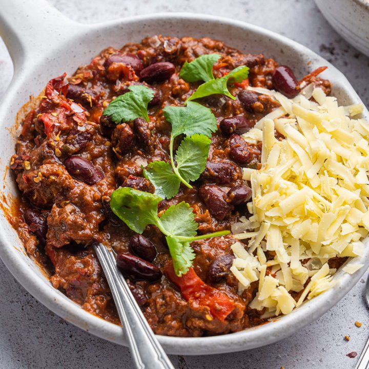

Chilli

Description
Who doesn't love a bowl of warming chilli on a cold autumn/winter's night? Serve with grated cheese, avocado, rice, or tortillas.
Ingredients
For 2 people, you will need:
- 1 onion (chopped)
- Half a pack of chestnut mushrooms (sliced)
- A tin of kidney beans
- A tin of refried beans
- 500g of minced beef or minced quorn
- 1 tin of tinned tomatoes
- A splash of red wine
- 1 chilli (sliced, either seeded or deseeded)
- 1/2 a teaspoon of cinnamon
- 1 teaspoon of ground cumin
- 1 teaspoon of cocoa
- A decent shake of Worcestershire sauce
- (Optional: grated cheese, avocado, sour cream)
Steps
- Fry the onion in some olive oil until it's soft (about 5 minutes)
- Add the mushrooms and cook for a couple of minutes
- Add the beef/quorn and fry until brown
- Add the wine and let it sizzle
- Add the tinned tomatoes, the beans and the spices
- Let it reach a nice simmer, then turn the heat down
- Get the rice on
- Let the chilli sit for 10 minutes before serving
- Scatter with cheese/avocado/sour cream